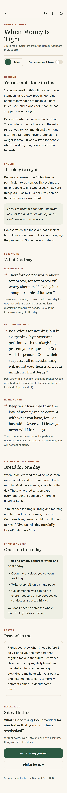

Bible in Plain Sight helps you find what the Bible says about the things you are actually facing: money worries, grief, anxiety, conflict, doubt and more.
A big decision, an uncertain future, searching for purpose
Joy & Gratitude
5 topics
Thankful, good news to celebrate, a new baby, a wedding
I Need Help Now
5 topics
Always one tap away and always free, with helplines for your country or a way to find one.
Inside every topic
An honest card, not a quick verse.
An honest opening
It names what you are going through, plainly.
A lament
Room to bring the hard part to God. On joyful topics: Remember.
What God says
Passages with a note on their context. Every passage opens the whole chapter.
A story from Scripture
A moment from the Bible that speaks to yours.
One practical step
Something small you can do today.
A prayer
Or, with “For someone I love”, a prayer for a person by name.
A verse to keep
To carry with you, or to send as an image.

Scripture is always set apart from the commentary, with its reference beside it, word for word.
Psalm 34:18
The LORD is near to the brokenhearted; He saves the contrite in spirit.”
Scripture quotations are from the Berean Standard Bible (BSB), public domain.
Check-in · 3 days later
How is it now?
Better
About the same
Worse
It asks again, later
A record of how God met you along the way.
Write in your journal with a simple “How heavy does it feel?” scale. A few days later the app asks how it is now. Your Timeline shows the way you have come.
When things are better, save a Stone of Remembrance: a short note, in your own words, of how God helped. Like the stone Samuel set up and named Ebenezer (1 Samuel 7:12).
Our promise
What you write stays with you.
No account and no sign-in.
No ads, no analytics, no tracking.
Your journal stays on your phone. We never see it.
Reminders are private by default: no topic on your lock screen.
Every crisis topic and every topic about grief, depression, addiction and other hard times, plus Anxiety and worry, and Thankful. Every feature is free too.
One purchase, with no subscription, unlocks the other 72 topics.
Nobody in pain should meet a price.
Need help now?
If you are in danger, call your local emergency number.
In the app, “I need help now” is always one tap away. It shows helplines for your country, or a way to find one. You can also find a helpline at findahelpline.com.
Bible in Plain Sight offers Scripture, prayer and a place to write. It does not replace a doctor, a therapist or emergency services.